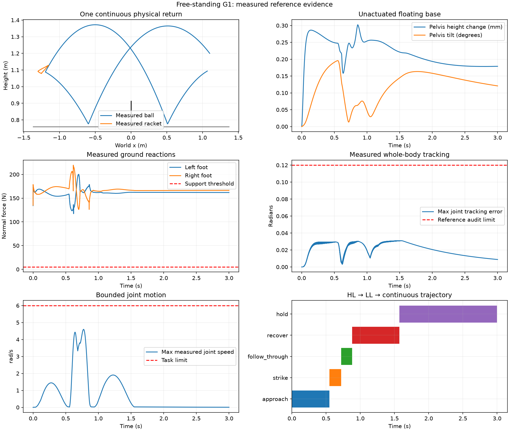

自由站立 G1 乒乓球：分层专家解与全身控制
29 个关节力矩控制，保留浮动骨盆；真实足底接触支撑身体。一次合法回击后恢复稳定准备姿态。
范围：双脚原地支撑、单次回球、仿真状态观测。尚不包含迈步、连续对打、视觉策略或双打。
12/12
完整参考执行4/4
独立力矩重放100
每条参考得分3 → 5
目标 → 动作连续物理见证
Gamma RTX A4000 用于 CUDA 候选评分与 EGL 渲染。MuJoCo 接触动力学及 OSQP 全身控制运行在 CPU；无实时控制声明。
分层专家与轨迹
| ID | Goal | Actions | Independent evidence |
|---|---|---|---|
| H0 | 准备截击 / Prepare | approach | 来球预测、可达性、准备运动 / prediction, reach, measured preparation |
| H1 | 回击目标 / Return | strike → follow_through | 球拍接触、过网、首次落点 / impact, net, first landing |
| H2 | 稳定回位 / Recover | recover → hold | 双脚支撑、身体直立、终态保持 / feet, upright root, terminal dwell |
全身 QP 同时满足浮动基座动力学、足底约束、摩擦锥和电机力矩上限。实际接触力由物理引擎计算。评分独立检查足底支撑、滑移、摔倒、身体倾斜和恢复站姿；击球落点正确也不能掩盖失衡。

评分和失败对照
合法击球 25 → 过网 25 → 对方台面 20 → 目标圆 15 → 稳定回位 15。前四项为 once，最后一项为 live；完整性失败清零。
原地保持对照 25 分但失败；零力矩对照 0 分且失败；无效宽来球被筛除并计为规定回合 0 分。保留全部规定尝试和 7 次开发记录。12 次执行是四个明确配置的重复，不代表随机泛化能力。
复现
python -m humanoid.g1_table_tennis.run --device cuda --case nominal --video --output /tmp/g1-tt python -m humanoid.g1_table_tennis.verify /tmp/g1-tt python -m humanoid.g1_table_tennis.run --device cuda --replay /tmp/g1-tt --output /tmp/g1-tt-replay
Task manifest · Expert contract · Data card · Licenses
Campaign · All attempts · Replays · Balance measurements · Contact checks · Development history
迈步、机械臂移动与连续对打：扩展任务和指标设计
设计草案，尚未通过新任务的物理执行验收。